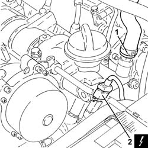
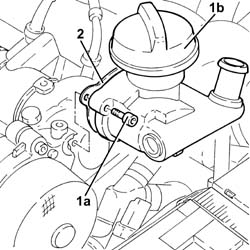
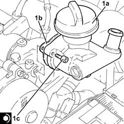

1084A22 ENGINE OIL FILLER - R R
- Path
- Procedures > 10 ENGINE UNIT > 1084 ENGINE LUBRICATION SYSTEM > 1084A INDICATORS/CHECK DEVICES > 1084A22 ENGINE OIL FILLER - R R
- Kind
- repair procedure (removal / refitting; the operation number is the code)
- Applies to
- engines: 1.9 JTD 16V; all production periods
- Interactive page
- https://sloeber94.github.io/elrnDB-aGt/en/#/125001149
Applies to: engines: 1.9 JTD 16V; all production periods
 Removing
Removing
 Refitting
RefittingEnsure that the ignition key is in the OFF position, then disconnect the negative battery terminal (-).
Name | Connector | |
|---|---|---|
- | Battery | See A1B BATTERY ( BATTERY NEGATIVE ) |
Proceed with removal
- 1016A10 sound-proofing cover - r + r
1. Loosen the band and disconnect the engine oil vapour recovery pipe from the engine oil filler.
2. Disconnect the electrical connection from the engine coolant temperature sensor.
Name | Connector | |
|---|---|---|
2 | Engine temperature sender unit | See K36 ENGINE TEMPERATURE SENDER UNIT ( CONNECTORS ) |

Applies to: engines: 1.9 JTD 16V; all production periods
1. Undo the bolts (1a) and remove the engine oil filler (1b).
2. Remove the gasket.

Applies to: engines: 1.9 JTD 16V; all production periods
Refitting
Removing1. Place the engine oil filler (1a), complete with gasket (1b), back in its housing and secure it tightening the new bolts (1c) to the recommended torque.
 | Fastening | Component | Ø | Value (daNm) |
|---|---|---|---|---|
1c | Bolt | OIL FILTER FITTING | M6 | (Cylinder head side 08 10 |

Applies to: engines: 1.9 JTD 16V; all production periods
Connect the electrical connection to the engine coolant temperature sensor.
Connect the oil vapour recovery pipe to the engine oil filler and tighten the band.
Proceed with refitting
- 1016A10 sound-proofing cover - r + r
.
Connect the negative (-) battery terminal